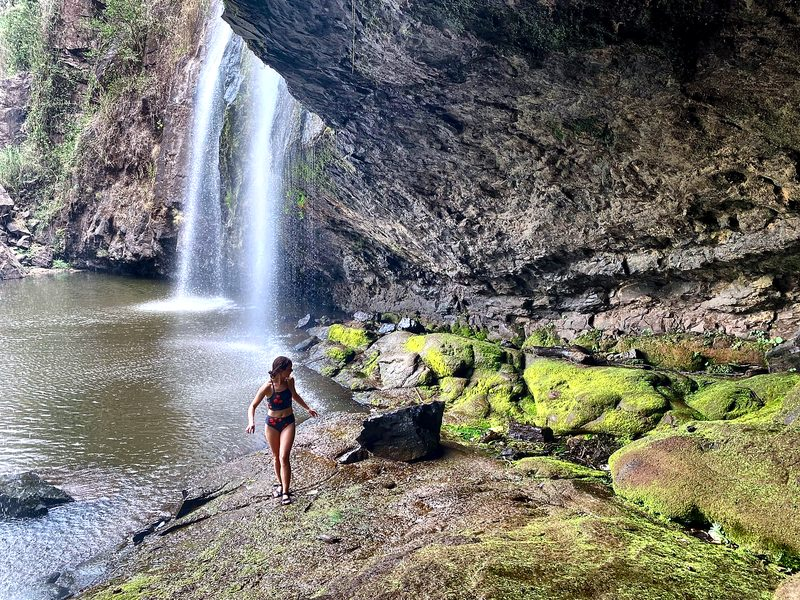
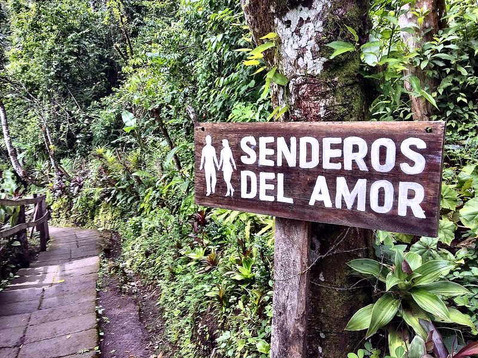
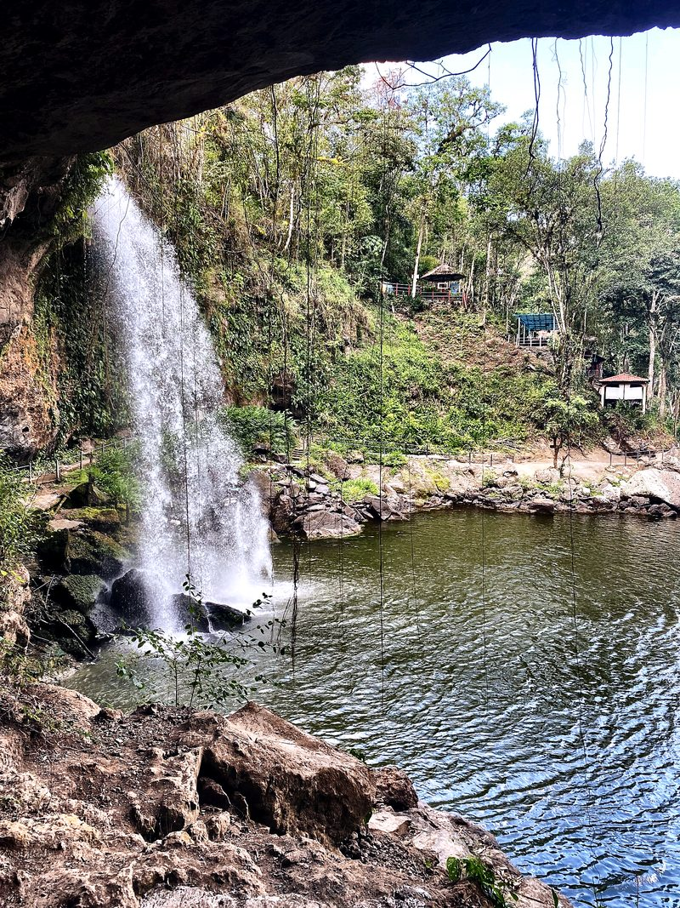
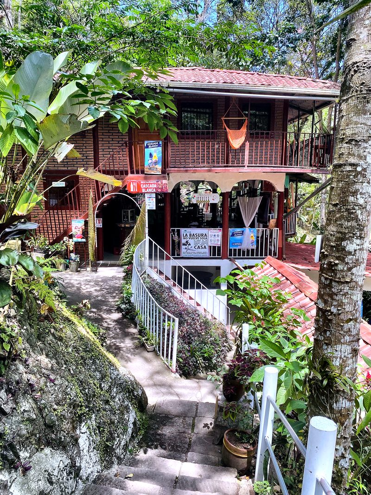
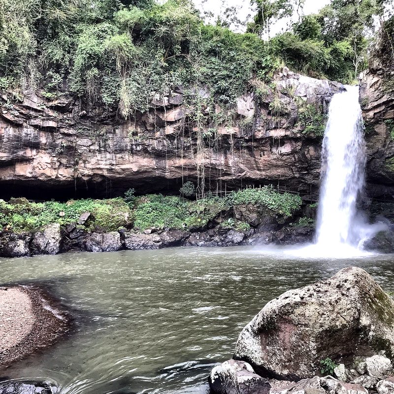
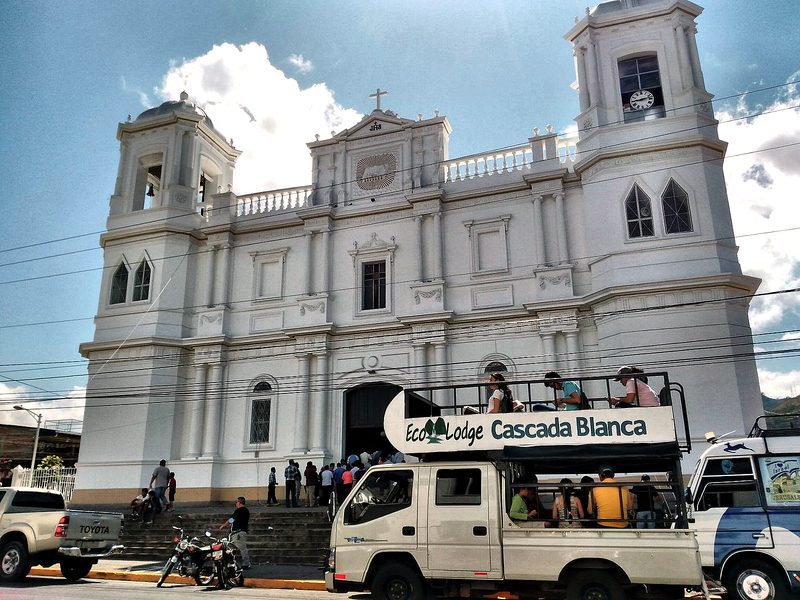
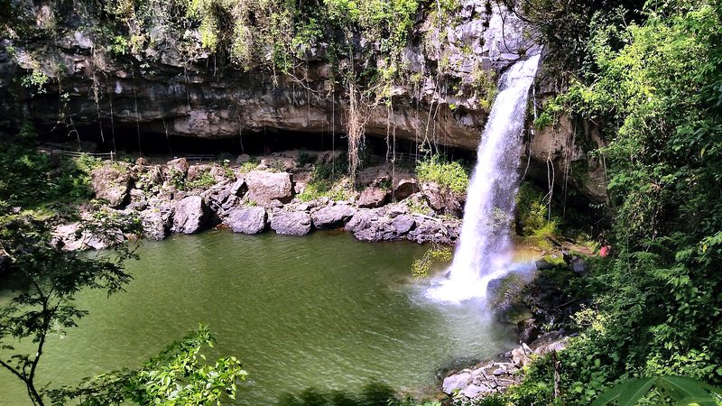
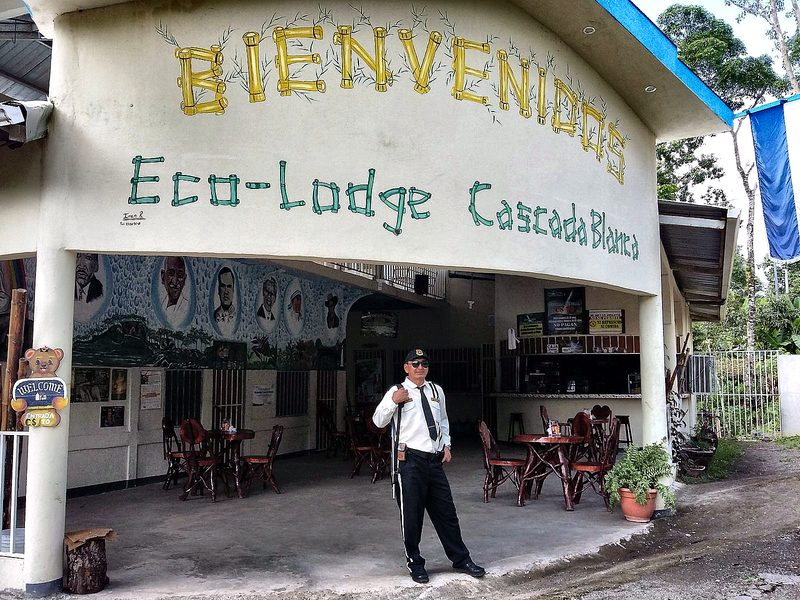
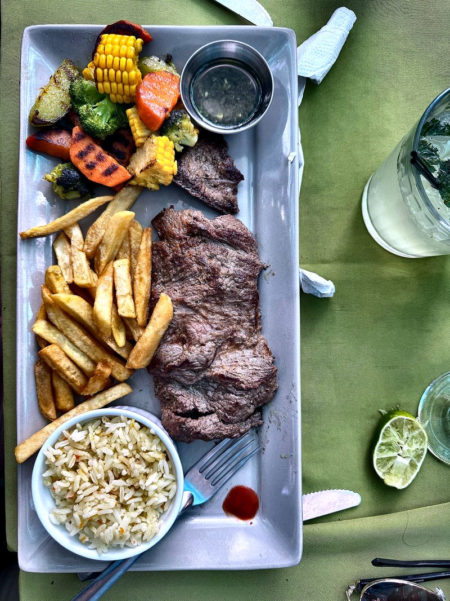
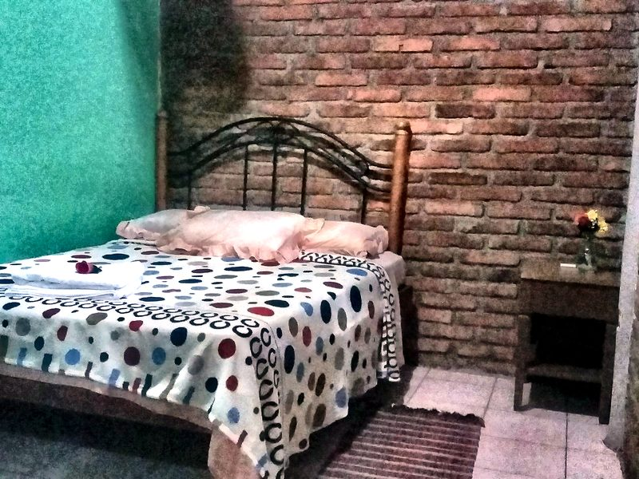

Caminar debajo del río
El salto de 17 metros y la cueva detrás de la caída.
Matagalpa, Nicaragua
Cascada de 17 metros, cueva, senderos y un eco-lodge junto al agua, a 17 km de Matagalpa.
Qué ofrecemos
Todo se reserva o se confirma por WhatsApp. Los precios se consultan; no los publicamos aquí porque varían y hay que confirmarlos con el lodge.

El salto de 17 metros y la cueva detrás de la caída.

Caminos como el Sendero del Amor.

La cueva junto a la cascada, el rincón más buscado para acampar.

Recorridos en la reserva y la zona cafetalera.

Según el caudal, el clima y la temporada. Consulta disponibilidad.

Transporte de ida y vuelta desde la ciudad. Se reserva por WhatsApp.
Galería
Fotos reales del lugar, mejoradas solo en luz y nitidez.




Hospedaje
Es un eco-lodge rústico, no un hotel urbano.
TripAdvisor registra 5 habitaciones.
Se puede acampar en la cueva, junto a la cascada.
Consultar por WhatsApp
Hay un café en la entrada y un restaurante más abajo, con vista a la cascada.
Consultar por WhatsApp
Cómo llegar
Está al borde de la carretera, en la comunidad Santa Emilia, a unos 17 km de Matagalpa.
El horario más repetido para la visita de día es de 9:00 a 17:00.
Antes de ir
Lo que dicen quienes ya fueron
Citas textuales de reseñas públicas. No son testimonios pagados.
“This place is special, very special. Need an escape for the hustle and bustle, plan an evening or three at Cascada Blanca… A special thank you to Don Victor who received me as if I were a long lost friend.”
Corinne Cahuzac, TripAdvisor, diciembre de 2019
“The owner has created this with passion and it shows. You may get to the cave behind the waterfall which is quite large. Plan to spend some time — here there is no rush.”
CLOSEBY, Matagalpa, TripAdvisor, enero de 2020
“Just tell the bus driver you're going to Cascada Blanca and they stop right in front… Would highly recommend.”
janellef186, TripAdvisor, reseña de julio de 2016 (estadía en junio de 2016)
“A beautiful place, located just 18 km from the city of Matagalpa, can make you feel happy and forget stress immediately… Which you can pass under it and feel the breeze of the water that regenerates you.”
Sightsee644725, TripAdvisor, febrero de 2024
Reservas
El formulario arma un mensaje claro, con un código de solicitud, y lo abre en el WhatsApp del lodge: +505 5846 9876.